Search a name, not a genre
2,413 artists, producers and genres in one search, through aliases and typos. Before you press anything, a card says what that name does: its song forms, its ways of arranging, its section lengths and its signature moves.
Freally Unloop turns an 8-bar loop into a finished, arranged record in the style of any of 2,413 artists, producers and genres — performed over your own sound, live in your DAW, then dragged out as audio stems or as a MIDI song template.
This page describes Freally Unloop version 1.0: everything on it is in 1.0, and nothing planned for after 1.0 is on it.
Every figure is counted from the app itself. Nothing is estimated, and nothing is rounded up.
Everything Unloop does today is free, for everyone: no paid tier, no subscription, no account, no key, no ads and no trial that runs out. The arrangements, audio, stems and MIDI you make with it are yours, as far as the loops you arranged were yours to use.
2,413 artists, producers and genres in one search, through aliases and typos. Before you press anything, a card says what that name does: its song forms, its ways of arranging, its section lengths and its signature moves.

A genre is arranged several ways — radio cut, mixtape cut, club cut, switch-up, minimal — unless it genuinely has only one, and then its card says why. Artists and producers add their own, and every press is a new seed you can keep and paste to get the same arrangement back.

Press play and Unloop performs the record over your own audio, in time with your project: intros, hooks, drop-outs, 808 cuts, filter sweeps, stutter builds, tape stops, half-time and beat switches. No move clicks, and none adds latency.

FL Studio's pattern mode and Ableton's session view loop without moving the song position. Unloop counts the loops itself, so the whole record still plays over the 8 bars going round.

One stereo loop is enough: Unloop arranges it in low, mid and high bands. Put an instance on each part's track instead and one of them conducts them all as one record, with a full console of faders and lamps.

Move, copy, split, resize and fade every clip with three-handle fades; ride clip, part and master faders; draw automation on 12 lanes per part; reorder sections; lock what you like and reroll the rest. Unlimited undo, and an autosave that survives a crash.

Preview the arrangement inside Unloop while your DAW is stopped. Print it as WAV, AIFF, FLAC or MP3, the mix or one stem per part, and drag the song, one part or one section straight onto your tracks. A receipt goes beside every file.

Flip to MIDI and the same arrangement becomes a multi-track MIDI song template, read from your own loop's notes, with section markers. The Velocity Doctor gives each part the right kind of velocity: accents and ghosts on drums, a steady 808, even chords.

Each loop is saved once, as its own project, with a shelf of named arrangements: switch between them on the next bar, compare any two, and carry one to another loop as a file. The Loop Library holds every loop you have, ready to audition.

Drop up to eight stems or MIDI files and arrange them without a DAW. With no DAW to follow, Unloop suggests the artist's tempo and can stretch your loop to it; the Loop Doctor finds seam clicks, clipping and a tempo that does not add up.

Re-Dream gives three new takes on the arrangement you have, keeping its shape. Add synthesized risers and impacts, your own producer tag and beat switches, then let the Arrangement Doctor point out a late hook or a section that never changes, with a fix.

No account, no telemetry and no model: a rule-based planner and classic signal processing, checked by a build gate. The plugin and the standalone never go online; the one exception is an update check that stays off unless you switch it on, run by a separate program.
Freally Unloop 1.0 next to five products sold today that arrange a loop, vary it or write whole songs: ArrangerKing (an arrangement plugin), Loopmix (a loop-remix plugin), Songen (a beat-making app), and Suno and SOUNDRAW (AI song generators). Every cell for another product comes from its maker's own pages, checked on 1 and 2 October 2026, and prices are US dollars before tax, as listed on 2 October 2026.
| Feature | Freally Unloop 1.0 | ArrangerKing | Loopmix | Songen | Suno | SOUNDRAW |
|---|---|---|---|---|---|---|
| Price (USD, October 2026) | Free today | $54 | $69 | Free tier; Premium $89.99 a year | Free tier; Pro $10 and Premier $30 a month | From $16.99 a month; stems from $35.99 |
| Turns your own loop into a whole song for you, writing no new music | has it | partlyyou set every mute | partlyloop variations | does notwrites its own | does notwrites new music | does notwrites its own |
| Arranges in the style of an artist or producer you name | has it2,340 of them | does notgenre templates | does not | does notgenres | does nota name can stop a song | does notgenres and moods |
| Moves performed on your own audio: 808 cuts, stutter builds, tape stops | has it | partlymutes only | partlygate, reverse, pitch | does not | does not | does not |
| Every clip, fade, fader and automation lane editable | has it | partlyparts and mutes | does not | partlyarrangement and notes | has itPremier, in Studio | partlymute, solo, intensity |
| Audio stems out | has itWAV · AIFF · FLAC · MP3 | does not | partlyof a loop | has it | has itpaid plans | has itArtist Pro and up |
| The song as a MIDI file | has itfrom your own loop | does notguide tracks only | partlyof a loop | has it | partlyPremier, in Studio | does not |
| A plugin in your DAW | has itCLAP · VST3 · AU | has itVST3 · AU | has itVST · VST3 · AU · AAX | does not | does not | does not |
| Native on Windows, macOS and Linux | has itWindows · macOS · Linux | partlyLinux only through Wine | partlyWindows · macOS | partlymacOS | does notin a browser | does notin a browser |
| Works offline | has it | not verified | not verified | has it | does not | does not |
| No account and no telemetry | has it | does notsends usage data | not verified | not verified | does notan account | does notan account |
| No AI anywhere | has itchecked by a build gate | has it | not verified | does notits own AI | does not | does not |
The short version: only Unloop turns your own loop into a whole record for you, in the style of an artist or producer you name, with the moves performed on your own audio. It is the only one native on Linux as well as Windows and macOS, and the only one that works offline with no account, no telemetry and no AI.
Where they win: Suno, SOUNDRAW and Songen write new music for you — which Unloop never does, on purpose. Loopmix slices and resequences the inside of a loop rather than arranging it into a song, and it is also an AAX plugin for Pro Tools, which Unloop 1.0 is not.
Unloop's column is version 1.0, which is not out yet, and its price is today's: Unloop is free today, and future versions may be sold. The other products change too; this table is as of 2 October 2026. Product names are trademarks of their owners, and Freally Unloop is not affiliated with any of them.
Every sound in an arranged record comes from your loop, or is a transition effect Unloop builds from oscillators and noise. It never writes a note of new music into your song, and never changes the loop file on your disk.
A planner reads researched arrangement data for each artist, producer and genre, and decides every section and move before a sound plays. The same loop, name, mode and seed give the same arrangement today and in five years — so a seed you send a collaborator plays them exactly what you heard.
The audio and the MIDI song template are drawn from the same plan, and every edit reaches both. When MIDI cannot say what a move did — a tape stop's pitch dive — the move is marked as audio-only instead of quietly dropped.
No account, no telemetry, no cloud. Your loops and your records never leave your computer, and a build gate fails if network code reaches the plugin or the standalone. The web app loads once, then works offline and uploads nothing.
The plugin always plays at your project's tempo and never changes it. When the artist or producer you picked works at another tempo, Unloop suggests it, and counts half and double time as a match. In the standalone and the web app, it can stretch your loop to their tempo.
A name describes how someone arranges, and nothing more. Unloop never recreates a specific song's arrangement, and keeps names out of your file names unless you put them there. Read the full disclaimer (in English)
Stated plainly, because a feature list that hides its gaps is not worth reading. This page describes version 1.0, and Unloop is built one rung at a time, so not everything on it is built yet. Each rung on the road to 1.0 is marked with its state.
There are no downloads before version 1.0, and none on this page.